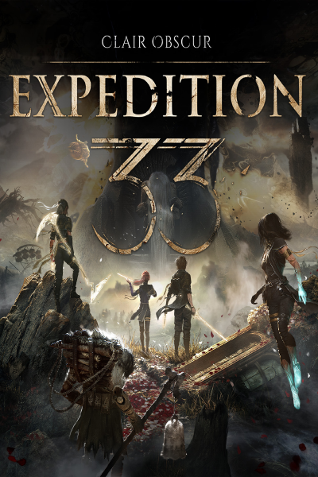
Clair Obscur: Expedition 33
🎮 Sandfall Interactive (🇫🇷)
🏢 Kepler Interactive (🇬🇧)
▼- Thailand Game Awards (TH)
- Stuff (UK)
- Konzoliste (CZ)
- Larazon (ES)
- Rankingiproduktow (PL)
- Golden Joystick Awards (Players´ Choice, UK)
- Premios Xataka (ES)
- The Lazy Game Awards (ID)
- 3DJuegos (ES)
- 3DJuegos (Players´ Choice, ES)
- AP (US)
- Atlion Audio (US)
- True Gaming Awards (SA)
- Rolling Stone (US)
- Inverse (US)
- GameFest Awards (US)
- The National (AE)
- Collider (CA)
- FullCleared (US)
- Controller (US)
- Michigan Daily (US)
- GamesRadar (UK)
- Dexerto (UK)
- Syfy Games Awards (ES)
- Minimap Gaming (US)
- Equinox Latam Game Awards (MX)
- Tech Tudo (BR)
- Lucca Comics & Games (Players´ Choice, IT)
- The Review Geek (US)
- UAGNA.IT (IT)
- Slant Magazine (UK)
- Videogamer (UK)
- Fire Escape Cast (UK)
- Vigiato (IR)
- Vigiato (Players´ Choice, IR)
- Computerbild (DE)
- In The Game (NL)
- Flow Games TV (BR)
- Flow Games TV (Players´ Choice, BR)
- Adventure Games (US)
- The Ringer (US)
- Meristation (ES)
- The Casual Report (UK) (Players' Choice)
- The Casual Report (UK)
- Checkpoint (AU)
- PC Games (DE)
- WatchMojo (CA)
- 1&1 (DE)
- NASCE, CRESCE, RESPAWNA (Players´ Choice, IT)
- Movistar (ES) - tie
- Complex (US)
- Game'N'Talk (IT)
- 3arrafni (SA)
- The Game Awards (US)
- Gamespot (US)
- Destructoid (US)
- Destructoid (Players´ Choice, US)
- Navigames (ES)
- Southwest Airlines Gaming League (US) (Players' Choice)
- Mathrubhumi (IN)
- 3DJuegos Latam (MX)
- FZ (Players´ Choice, SE)
- WhatCulture Gaming (Players´ Choice, US)
- Vgamerz (US)
- Mezha (UA)
- GRIND (Players´ Choice, RO)
- Geekwithkids (CA)
- Techtaiment Game Awards (UAE)
- Esquire (US)
- Maxim (US)
- Everyeye Awards 2025 (Players´ Choice, IT)
- Thailand Game Awards (Players´ Choice, TH)
- GTOPIA (Players´ Choice, KR)
- Senscritique (Players´ Choice, FR)
- Gameinformer (UK)
- Review de Jogos (BR)
- Gameinformer (Players Choice, UK)
- AGP (CN)
- VGMAG (IT)
- Cybersport (RU)
- Hardcore Gamer (CA)
- Polytika (PL)
- NRC (NL)
- XGN (NL)
- GameObserver (US)
- The Zheguang Award (Players´ Choice, CN)
- Kit & Krysta (US)
- Hi-fi (RU)
- Inven (Players´ Choice, KR)
- Earlyaccess (Players´ Choice, UA)
- Nerdando (IT)
- Nerdando (Players´ Choice, IT)
- Ara (ES)
- TechRadar (US)
- Terra (BR)
- PRIMETIMER (US)
- Geek and Com (CA)
- Gamekult (Players´ Choice, FR)
- IGN (US)
- 4P (DE)
- Grand Game Awards (DZ)
- Grand Game Awards (Players' Choice, DZ)
- EDGE Awards (US)
- Gamekings (NL)
- Le Figaro (FR)
- Chiclana & Friends (Players' Choice, ES)
- Titanium Awards (ES)
- AnimeClick (IT)
- IGN (Players´ Choice, US)
- JVleMag (Players´ Choice, FR)
- Nova Pov (NG)
- The AU Review (AU)
- Binge Bot (NL)
- Canaltech (BR)
- Project COE (CA)
- Mobalytics (US)
- Mobalytics (Players' Choice, US)
- GameWatcher (HR)
- GameRant (US)
- Gamer Social Club (CA)
- The Gamer (CA)
- Empire (UK)
- Omelete (BR)
- Mxdwn (US)
- Way Too Many Games (US)
- Men´s Journal (US)
- But Why Tho (US)
- Famitsu (JP)
- Next Play (AU)
- The Coxxie Awards (US)
- New Game Plus (AR)
- Digital Foundry (Players´ Choice, US)
- Gameswelt (DE)
- Crealkillerz (DE)
- Julien Chièze Awards (FR)
- Alpha Games (UK)
- Gamevicio (BR)
- Gamevicio (Players´ Choice, BR)
- The Art of the Gaming (ES)
- Gamexpress (TW)
- La Caverna del Gamer (ES)
- Dualshockers (US)
- Gamedivision (BR)
- Backlog Battle (Players' Choice, US)
- Console Creatures (CA)
- The Outerhaven (LU)
- JSUG Awards (FR)
- Insider Gaming (US)
- República Coisa de Nerd (BR)
- Gamer (NO)
- RTL Infos (LU)
- 게임발굴단 (Players' Choice, KR)
- IGN Benelux (NL)
- Cinelix (US)
- Ilvideogiocatore (IT)
- Game Legends (IT)
- PLAYERINSIDE (IT)
- Tierra Gamer (MX)
- Metro Game Central (UK)
- HCL (Players´ Choice, HR)
- GS Plus (HU)
- Den of Geek (US)
- IGN Brasil (BR)
- Blunt Magazine (AU)
- GamingTrend (US)
- All in the Game (NL)
- HBVL (BE)
- PULS Gaming Analyse (DE)
- ENROGOTYS (Players' Choice, ES)
- Gaming Trend (US)
- Pragalicious (Players´ Choice, NL)
- TheGamerBR (BR)
- GamingGadgets (DE)
- Third Éditions (FR)
- NotPatrick Podcasts (Players´ Choice, FR)
- IGN Italy (IT)
- PPE (PL)
- Irish Times (IE)
- La Belle et le Gamer (Players´ Choice, FR)
- Loaded (Players´ Choice, US)
- Gamequarter (BE)
- Marin Independent Journal (US)
- Save the Game (Players´ Choice, GR)
- Save the Game (GR)
- The Mercury News (UK)
- GameWorld (GR)
- InFeRnoBraVeHeart (GR)
- Gamepro (DE)
- Gamer365 (HU) (Players' Choice)
- Get Played (Players´ Choice, US)
- JV France (FR)
- Kanobu (Players´ Choice, RU)
- Minimap (KR)
- Game Talk (US)
- Analog Stick Gaming (UK)
- Tom´s Guide (US)
- Eurogamer (Players´ Choice, UK)
- SweClockers (Players´ Choice, SE)
- Republica DG (BR)
- Bo3 (UA)
- De Standaard (BE)
- The Smash Hit Chronicles (IN)
- Gamereactor Sweden (SE)
- 4Gamer (JP)
- CD-Action (PL)
- Stevior (AU)
- IGN Middle-East (Players' Choice)
- That Nerd Show (US)
- The Dense Pixel (US)
- Gamers Global (DE)
- Cubiq (RU)
- Gamesource (IT)
- Nerdevil (IT)
- Gamepro (Players´ Choice, DE)
- Gamer Guides (UK)
- Gamereactor (UK)
- Eurogamer Germany (Players´ Choice, DE)
- Eurogamer Portugal (PT)
- Gamekult (FR)
- Metacritic (Players´ Choice, US)
- Metarankings (RU)
- Rejugando (ES)
- Gamereactor Denmark (DK)
- 4 Scarrs Gaming (US)
- CGM Magazine (UK)
- Noobfeed (US)
- A Gaming Podcast (US) - tie
- Ali213 (CN)
- Restart Run (US)
- Gazetelly (US)
- Geek to Geek (US)
- The Daily Star (UK)
- Prohardver (Players´ Choice, HU)
- Gamekyo（FR）
- Hynerd（IT）
- Gamemag（RU）
- Back Pocket（US）
- Popcornerd（IT）
- Cheat Code（US）
- Cybersport (Players´ Choice, RU)
- Stopgame (Players´ Choice, RU)
- Smashpad (US)
- Som Hráč (SK)
- Konsolentreff (DE)
- Meristation (Players´ Choice, ES)
- Gamefa (IR)
- Orden Pixel (ES)
- Crunchyroll (US)
- The Bonus Points (US)
- Giant Bomb (US)
- Minnmax (US)
- Hobby Consolas (ES)
- Lowcy Gier (Players´ Choice, PL)
- Video Time (BR)
- The Avocado (US)
- The Avocado (Players´ Choice, US)
- PBC:n (US)
- The Geek (FR)
- Start Menu (UK)
- 3DNews (Players´ Choice, RU)
- Eurogamer Spain (ES)
- Komputer Swiat (PL)
- GameForces (PT)
- IGV (FR)
- Mirf (Players´ Choice, RU)
- Geeky Brummie (US)
- Errekgamer (ES)
- Link To The Cast (IE)
- Last Stand Medium (US)
- Kotaku (US)
- Worthplaying (US)
- Stopgame (RU)
- Mind Controllers (US)
- Gamekapocs (HU)
- Top Down Perspective (US)
- JPGames (DE)
- Vgames (IL) (Players´ Choice)
- MGP635 (US)
- VG24.gr (GR)
- Le Monde (Players´ Choice) (FR)
- Gameforever (Players´ Choice) (FR)
- Årets spel (SE)
- Årets spel (Players´ Choice) (SE)
- Press Start (FR)
- Game Kast (BE)
- Game Kast (BE) (Players' Choice)
- Oyun Günlüğü (TR) (Players' Choice)
- Backlog Battle (US) (Players' Choice)
- Press Start (FR) (Players' Choice)
- OnPoint 4 Gamers (US)
- Podcast Now (US)
- Jaime Berlanga and David Garza (MX)
- Gamesmix (IQ)
- 4gamers (BE)
- fxp (IL)
- 지갑수비대 (KR)
- JV Mag (CH)
- Zone of Games (RU) (Players' Choice)
- Gamer365 (HU)
- LaScimmiaPensa (IT)
- VK Play (RU)
- Itzine (RU)
- Giant Bomb (US) (Players' Choice)
- Disgustin Men (RU)
- Phoenix Game Awards (HK)
- CAFE TRIX (FR)
- iGuides (RU)
- VLH Awards (BR) (Players´ Choice)
- SparkE3 (US) (Players´ Choice)
- SparkE3 (US)
- Gamergen (FR)
- ESPN (CL)
- AKB (ES)
- Stratege (RU) (Players´ Choice)
- JVONE (FR) (Players´ Choice)
- Spelsviens (SE)
- Backloggd (US) (Players´ Choice)
- Tolga Senel YT Awards (TR) (Players´ Choice)
- NewGamePlus (AR)
- WccTech (CA) (Players´ Choice)
- Silence on joue ! (FR) (Players´ Choice)
- IGN Japan (JP)
- Quest Daily (AU)
- Multiplayer.it (IT)
- Multiplayer.it (IT) (Players´ Choice)
- GAMIVO (US) (Players´ Choice)
- GAMEFAQs (US) (Players´ Choice)
- N7Kate (UK)
- Goodgame (HR) (Players´ Choice)
- BUG (HR)
- Game Eurauntsia (EUS)
- Smash Jump (US)
- Dropped Frames (US)
- FUZE Gaming (US) (Players´ Choice)
- Le Nexus (FR)
- Lord of Gaming (US) (Players´ Choice)
- Cenoe Expert (PL)
- ConsoleFun (FR)
- Coop & Canap' (MC) (Players Choice)
- ARKADEN (DK)
- GamingDose (TH) (Players Choice)
- GamingDose (TH)
- Elotrolado (ES)
- TVGP (US) (Players´ Choice)
- Harrison Putnam (US)
- Gaming Garnish (UK)
- GamerGuildTV (UK)
- Pixel Parents (UK)
- Kutok (UA) (Players´ Choice)
- Konzolista (CZ)
- YallaBallan (IL) (Players' Choice)
- Vgames (IL)
- The Games Letter (US) (Players´ Choice)
- Minnmax (US) (Players´ Choice)
- Games.tiscali (CZ)
- Championat (RU)
- AKSIZ (MY)
- Duniaku (ID)
- Rapid News (UK)
- Good Enough Gaming Podcast (CA)
- Gamer Chile (CL) (Players´ Choice)
- DarkZero (UK)
- Dbazi (IR)
- Critical Lenz (IR)
- Webhallen (SE) (Players´ Choice)
- HARDWIRED GAMES (US)
- GRcade (UK) (Players´ Choice)
- the cinemile (US)
- TCC Choice Awards (US) (Players' Choice)
- PS Insider (FR)
- Gaming illuminaughty (US)
- Soulless Gaming Bros (US)
- Giant Enemy Crab Podcast (US)
- Play!Zine (RS)
- Central GOTY Award (FR) (Players' Choice)
- The Random Encounter (US)
- GAMERCRITIC (US) (Players' Choice)
- Streamcast (UK) (Players' Choice)
- Goha.ru (RU) (Players' Choice)
- Goha.ru (RU)
- Fatal Error Nerd (BR)
- SosoGames (NG)
- The Art of Gaming (ES)
- Dpad_Life (US) (Players´ Choice)
- Magazynt3 (PL)
- Nördliv Avsnitt (SE)
- Hardwired Games (US) (Players´ Choice)
- Games And Not Games (US)
- Kinda Funny Games (US)
- The Late Night Podcasts (US)
- Kokang Gaming (ID)
- That Pixel Life (US)
- Player 2 (AU)
- Revista Oeste (BR)
- IGM.GG (RU)
- Power Unlimited (NL)
- SECTOR.sk (SK)
- Kinda Funny Games (US) (Players´ Choice)
- ITC (UA)
- Spectre#799 (US)
- The Gaming Outsider (US)
- IGN Middle East (EA)
- The Games Machine (IT)
- Press B To Cancel (US)
- DLC Podcast (US)
- Duello Gaming (TR)
- GamerUpToDate (CA)
- True Gaming (SA) (Players´ Choice)
- Metacouncil (US) (Players´ Choice)
- 001 RadioGame Cast (US) (Players´ Choice)
- Nerdelandslaget (NL)
- Esquire Greece (GR)
- Konnektor Podcast (HU)
- You´ve Already Peaked (US) (Players´ Choice)
- Svampriket (SE)
- Smashing Game Time (US)
- Gamopats (FR) (Players´ Choice)
- Dan The Games Man (UK)
- Tamindir (TR)
- Podgaming (ES)
- Video Games 2 the MAX (US)
- The Brothers' Take (IR)
- Melee Games (CA) (Players´ Choice)
- CAFE CRITIX (FR) (Players´ Choice)
- Roll 'n' Play (IT)
- Igromania (RU)
- לימיטד אדישן (IL) (Players Choice)
- Wallop (IT)
- Palette Swap (US)
- New York Game Awards (US)
- Dad level podcast (US)
- Nórd Nordursinn (IS)
- Interactive Distractions Podcast (US)
- WccTech (CA)
- Filmweb (PL) (Players Choice)
- Gamers With Jobs (US) (Players´ Choice)
- LevelUp (MX)
- Kotak Game (ID)
- Unscripted Gaming (US)
- Explosion Network (AU)
- Saluki Games (US)
- Alaab Gaming (SA)
- Cyberludus (IT)
- Algeria Game Awards (DZ)
- Algeria Game Awards (DZ) (Players´ Choice)
- Bluegartr (CA) (Players´ Choice)
- Gameworld (GR) (Players´ Choice)
- Niezatapialni (PL) (Players´ Choice)
- Forumogadka (PL) (Players´ Choice)
- Jeuxonline (FR) (Players´ Choice)
- Geekbecois (CA)
- Current Gen Podcast (US)
- Multiplayer (TR)
- VgChartz (UK)
- Lapsed Gamer Radio (UK)
- Go Artic (RU)
- 1-Up games (AU)
- Fantasmagieria (PL)
- Spawn Wave (US) (Players´ Choice)
- NeoGaf (US) (Players´ Choice)
- All You Can Geek (US)
- Game Pallete (IR)
- Saate7 (IR)
- The Level Up Legacy Podcast (US)
- CanardPC (FR)
- ActuGaming (FR)
- XTGamer (DE) (Players´ Choice)
- PeeWeeCast (BR)
- ResetEra (US) (Players´ Choice)
- Electric Playground Network (CA) (Players´ Choice)
- Electric Playground Network (CA)
- The Horizon (US)
- PPE (PL) (Players´ Choice)
- ActuGaming (FR) (Players´ Choice)
- Bazinameh (IR)
- Gray Areas (US)
- 8-4 Play (US)
- Nerd Squad Games (UK)
- Pinoy (US) (Players´ Choice)
- The Bit Effect (US)
- LAG Podcast (ES)
- Bits of Time (US)
- The Video Game Hall of Fame (UK) (Players´ Choice)
- Weekly Games Chat (US)
- Drop-In Drop-Out (US)
- Drop-In Drop-Out (US) (Players´ Choice)
- The Game Vault (US)
- Middle-Aged Geeks (IE)
- Mwah Gaming (NL)
- The Save Room (US)
- Easy Allies (US) (Players´ Choice)
- Good Playing with You (US)
- The Gamers Inn (CA)
- La Regla Del Tres (ES)
- PODGAMING (ES)
- The D.I.C.E Awards (US)
- Elder Players (SA)
- Elder Players (SA) (Players´ Choice)
- Cheesy Controller Podcast (US)
- Nördigt (SE)
- Gameliner (NL) (Players´ Choice)
- GamePeople Trani (IT) (Players´ Choice)
- This is Game (TH)
- O X do Controle (BR)
- Hobby Consolas (ES) (Players' choice)
- NAVGTR Awards (US)
- VGU TV (US)
- GCD Awards (US)
- 4playernetwork (US)
- PixlParade (US) (Players' choice)
- BAFTA (UK)
- BALALEE6 (KW)
- Sofacoach (DE) (Reader's Choice)
- gamescom latam 2026 (BR)
- Develop: Star Awards (UK)
- Hugo Award (US) (Readers Choice)
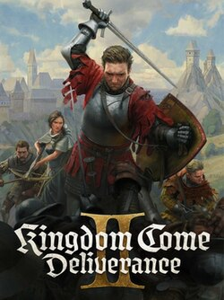
Kingdom Come: Deliverance II
🎮 Warhorse Studios (🇨🇿)
🏢 Deep Silver (🇵🇱)
▼- POGGERS Awards (Players´ Choice, CZ)
- Movistar (ES) - tie
- GRIND (RO)
- Reconectados Podcast de Videojuegos (ES)
- Alt Char (BA)
- Zing (Players´ Choice, CZ)
- Kinopoisk (RU)
- KMNT Awards (Players' Choice, CZ)
- Game Ex Machina (CZ)
- Zing (CZ)
- Refresher (Players´ Choice, CZ)
- Eurogamer Poland (PL)
- Hi-tech (RU)
- IT Hardware Poland (PL)
- HCL (HR)
- VGTimes (RU)
- Mezha (Players´ Choice, UA)
- ITde Talk (Players´ Choice, CN)
- Overlockers (UA)
- Gaming Professors (CZ)
- Vandal (ES)
- Iltalehti (FI)
- GSTV (RU)
- Playground (RU)
- Playground (Players´ Choice, RU)
- Blog For Life (RU)
- T-J (Players´ Choice, RU)
- IXTB Games (Players´ Choice, RU)
- Zone For Gamers (RU)
- Fomoroma (ES)
- Konzolista (CZ) (Players´ Choice)
- DTF (RU) (Players´ Choice)
- iDnes (CZ) (Players´ Choice)
- Gry-online (PL) (Players´ Choice)
- Gameonly (PL)
- Serieously (FR) (Players' Choice)
- Gamekings (NL)
- Ultra Game Awards (CN)
- Ultra Game Awards (CN) (Players´ Choice)
- Rock i Boris (PL) (Players´ Choice)
- Rock i Boris (PL)
- Games.tiscali (CZ) (Players´ Choice)
- IGN Polska (PL)
- Gamestar (DE) (Players' Choice)
- IndianTV (CZ) (Players´ Choice)
- SECTOR.sk (SK) (Players´ Choice)
- Pure Dead Gaming (UK)
- Kontrollbehov (SE)
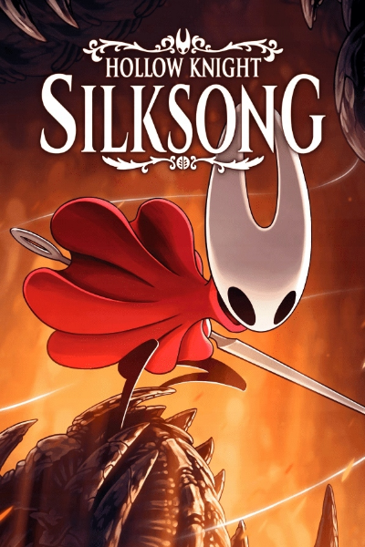
Hollow Knight Silksong
🎮&🏢 Cherry Team (🇦🇺)
▼- Helden der freizet (DE)
- NME (UK)
- BRCDEvg (MX)
- DGE Game Awards (Players' Choice, SA)
- Chiclana & Friends (ES)
- Rocket Beans TV (DE)
- Pompano Awards (Players´ Choice, BR)
- QUE (ES)
- JSUG Awards (Players´ Choice, FR)
- Overloadr (BR)
- Nos Dicen Gamers (ES)
- Atacore (IT)
- Glitchwave (US)
- Insider Gaming (US)
- Game8 (JP)
- Gamehall (BR)
- Top Down Perspective (Players´ Choice, US)
- Joseph Anderson Awards (Players´ Choice, US)
- Into the Aether (US)
- Into the Aether (US) (Players´ Choice)
- CONSOLE GAMER STATION (TH)
- PerazzoBrothersGaming (US)
- Loading (SE) (Players´ Choice)
- Par30Games (IR)
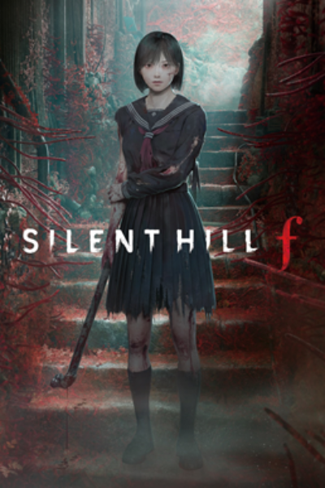
Silent Hill f
🎮 NeoBards Entertainment (🇭🇰)
🏢 Konami (🇯🇵)
▼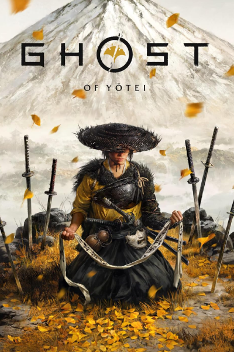
Ghost of Yotei
🎮 Sucker Punch Productions (🇺🇸)
🏢 Sony Interactive Entertaiment (🇯🇵)
▼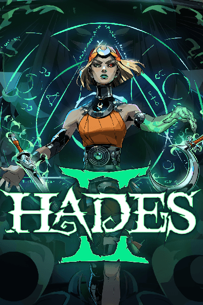
Hades II
🎮&🏢 Supergiant Games (🇺🇸)
▼- Ledevoir (FR)
- Schweizer Radio und Fernsehen (CH)
- Nexus Hub (US)
- Earlygame (DE)
- Rock Paper Shotgun (UK)
- The Escapist (FR)
- BaziCenter (IR)
- Gamescreed (US)
- Ecranlarge (FR)
- Coop & Canap' (MC)
- Co-Op64 (US)
- Two Penny Games (US)
- Videogamers Podcast (US)
- Good Enough Gaming Podcast (US)
- Unofficial Controller Podcast(UK)
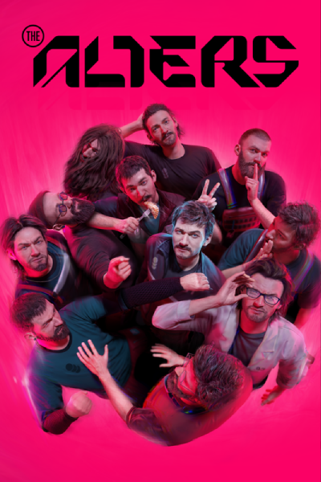
Death Stranding 2
🎮 Kojima Productions (🇯🇵)
🏢 Sony Interactive Entertaiment (🇯🇵)
▼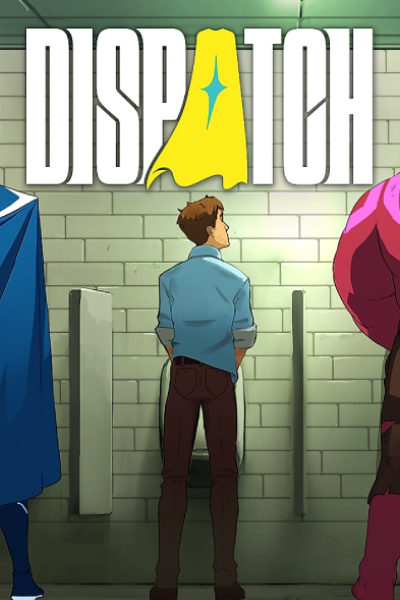
Dispatch
🎮&🏢 AdHoc Studio (🇺🇸)
▼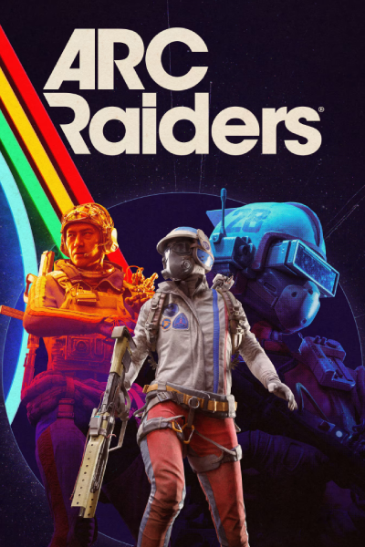
Arc Raiders
🎮&🏢 Embark Studio (🇸🇪)
▼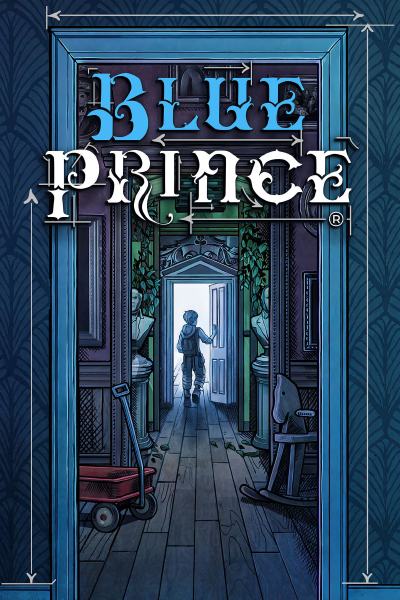
Blue Prince
🎮 Dogubomb (🇺🇸)
🏢 Raw Fury (🇸🇪)
▼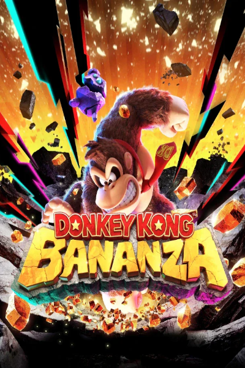
Donkey Kong: Bananza
🎮&🏢 Nintendo (🇯🇵)
▼- Golden Joystick Awards (UK)
- CNET (US)
- XDA (US)
- Kit & Krysta (Players´ Choice, US)
- Rewinder (UK)
- Gaming Age (UK)
- Atomix (MX)
- Adnkronos (IT)
- GameTown (UK)
- InBetweenDrafts (US)
- TwistedVoxel (US)
- Videochums (CA)
- Dual Wield Gaming Podcast (US)
- GVG (US) (Players Choice)
- A Gaming Podcast (US) - tie
- MonsterVine (US)
- Critical Diversions (UK)
- Tanuki Media (US)
- Hey Poor Player (US)
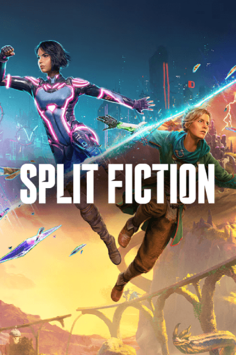
Split Fiction
🎮 Hazelight Studio (🇸🇪)
🏢 Electronic Arts (🇺🇸)
▼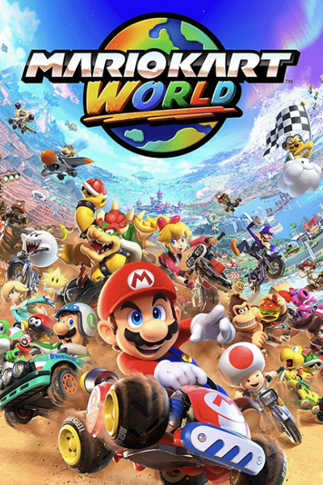
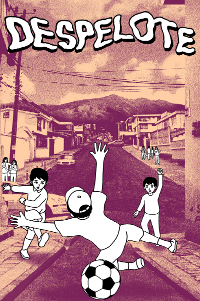
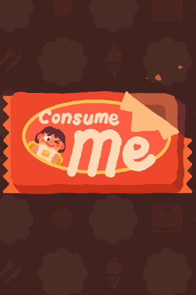
Consume Me
🎮 Jenny Jiao Hsia, AP Thomson, Jie En Lee, Violet W-P, Ken "coda" Snyder
🏢 Hexecutable (🇺🇸)
▼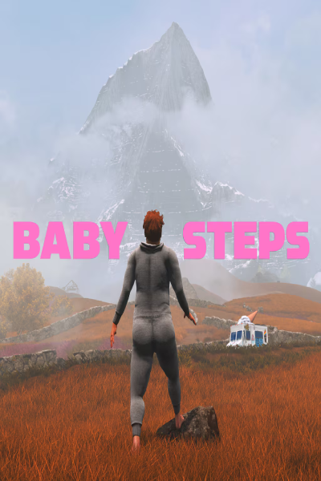
Baby Steps
🎮 Gabe Cuzzillo, Maxi Boch, Bennett Foddy
🏢 Devolver Digital (🇺🇸)
▼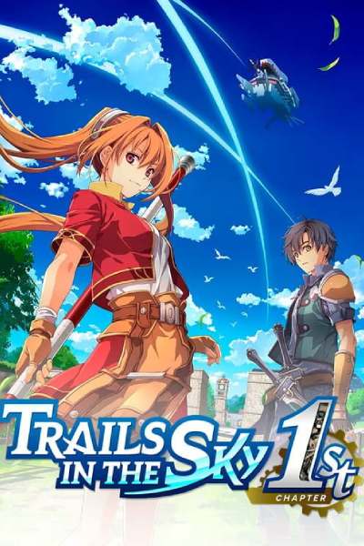
Trails in the Sky 1st Chapter
🎮 Nihon Falcom (🇯🇵)
🏢 GungHo Online Entertainment (🇯🇵)
▼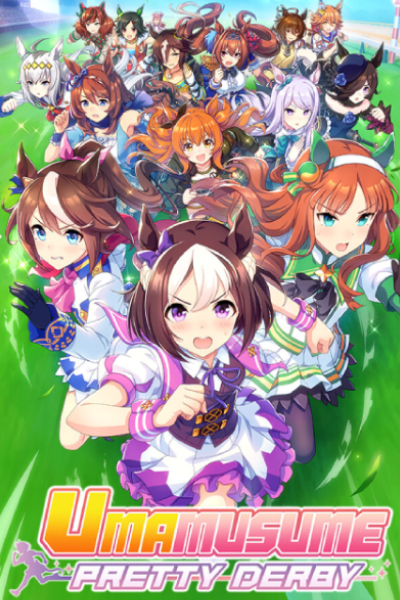
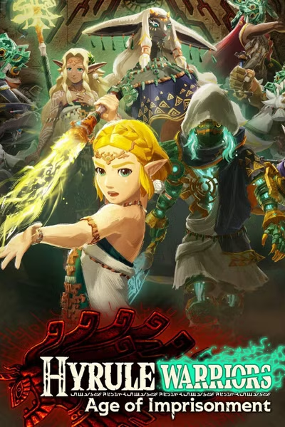
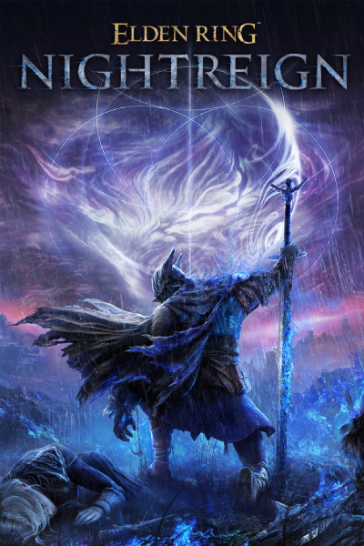
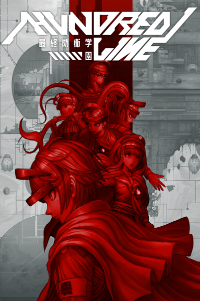
The Hundred Line: Last Defense Academy
🎮 Too Kyo Games, Media.Vision Inc. (🇯🇵)
🏢 Aniplex (🇯🇵)
▼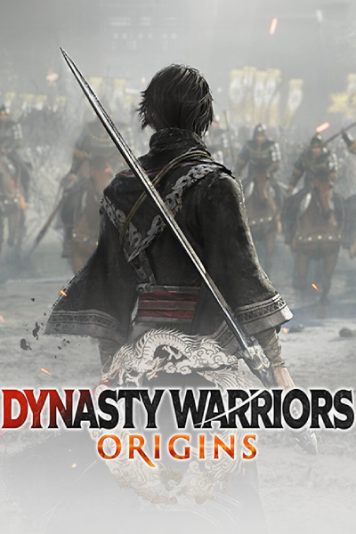
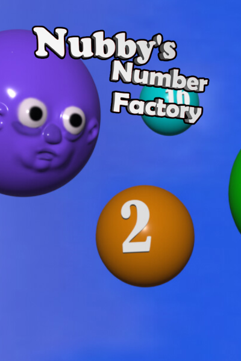
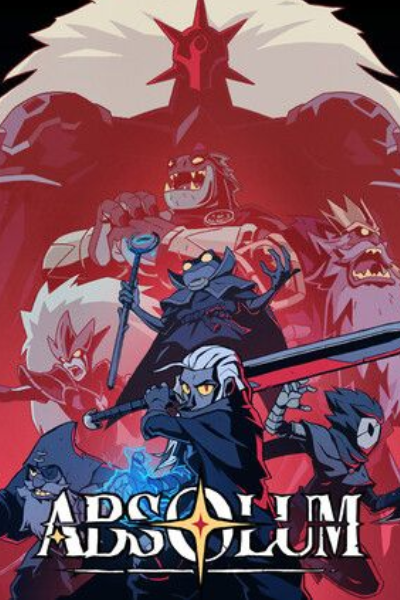
Absolum
🎮 DotEmu (🇫🇷), Supamonks (🇫🇷), Guard Crush Games (🇫🇷)
🎮 DotEmu (🇫🇷), Gamirror Games
▼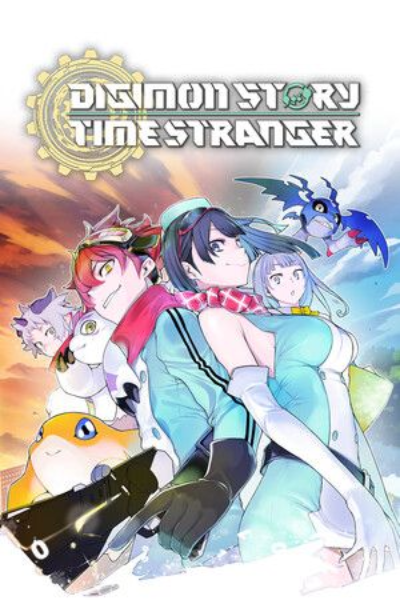
Digimon Story: Time Stranger
🎮 Media Vision (🇯🇵)
🏢 Bandai Namco (🇯🇵)
▼Ezio2048, Tarnished36, eclipse_, Thaum, Infi-Nerdy, Riki, Parsa, Captain_Vyse, Agata, Matus Strba, Yorker14, A.J. from VC, Lucia, Kratos2098, jrx8080, Hadok, MegaSackman, TheSix, xir, SpacebornFew, Domstercool,
Would you like to help us expand the GOTY database?
Join here:
ResetEra - 2025 Video Game Awards Season